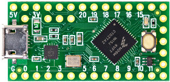
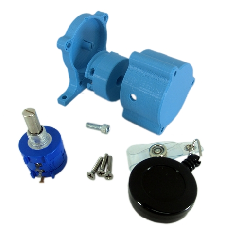
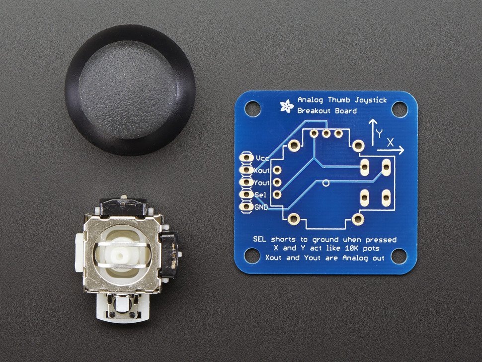
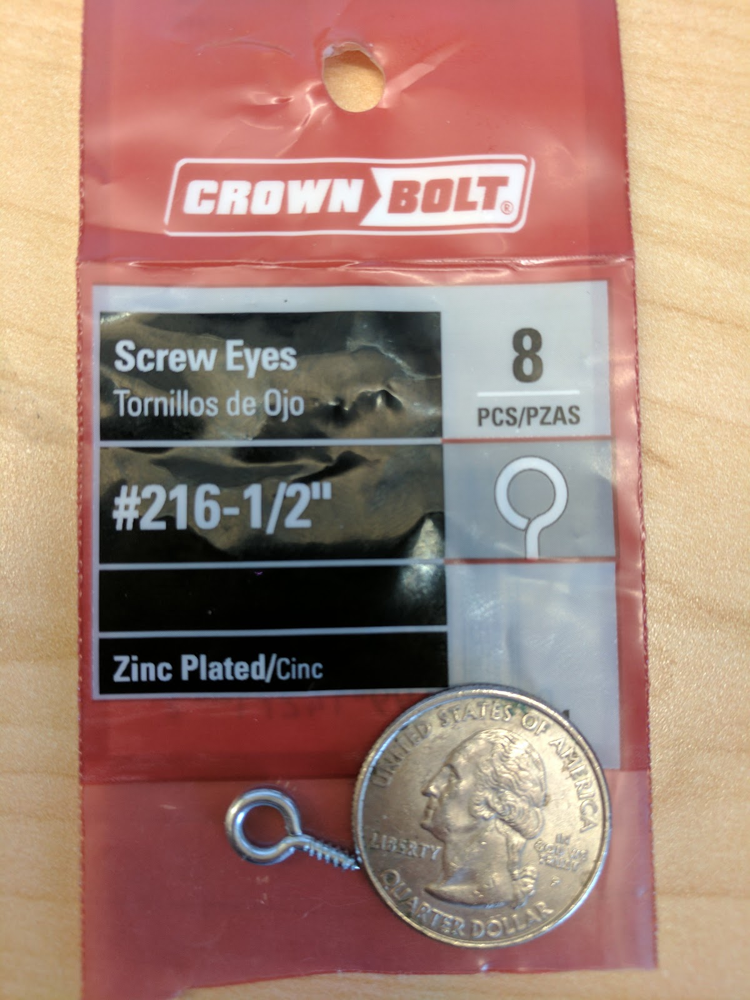

Game Trak DIY v0.1
- Equiment
- Standard Soldering Equipment
- Hot Glue Gun
- Pliers
- Wire cutters / strippers
- Heat source (lighter / air gun)
- Downloads
- Arduino IDE
- Teencyduino
- Parts
- Teency LC 
- AndyMark String Pot (This can be DIY. Instructions on their website.) 
- Analog 2-axis Thumb Joystick 
- Eye Screw (Crown Bolt #216 or matching) 
- Wire
- Shrink Wrap
- Hot Glue
- USB A to Micro B
- Build
- Assemble the String Pot via instructions found here.
- Assemble the Joystick but leave off the thumb cap.
- Joystick X to Teency #14
- Joystick Y to Teency #15
- String Pot #2 to Teency #16
- Joystick Ground to String Pot #3 to Teency Ground
- Joystick Vcc (or similar) to String Pot #1 to Teency 5V
- Bend the Eye Screweye 90 degrees.
- Screw the Eye Screw into tip of Joystick shaft.
- Use pliers to open Eye Screw a bit.
- Double loop string through Eye Screw.
- Use Pliers to close the Eye Screw.
- Hot glue the Joystick board to the String Pot as in the main photo.
- Note: You may want to hot glue the Teency to the string pot too.
- Upload Code below via the Arduino IDE
- Note: Instructions available at the link above.
- Calibrate Joystick X, Y, & Z axis via OS instructions.
- Wire, solder and shrink wrap the following connections:
Code
/*Game Trak Example
This example code is in the public domain. */
void setup() {
// configure the joystick to manual send mode. This gives precise
// control over when the computer receives updates, but it does
// require you to manually call Joystick.send_now().
Joystick.useManualSend(true);
}
void loop() {
// read analog inputs and use them for the joystick axis
Joystick.X(analogRead(0));
Joystick.Y(analogRead(1));
Joystick.Z(analogRead(2));
// Because setup configured the Joystick manual send,
// the computer does not see any of the changes yet.
// This send_now() transmits everything all at once.
Joystick.send_now();
// a brief delay, so this runs “only” 200 times per second
delay(5);
}
Game Trak DIY v0.1
arts.codes Vol 0